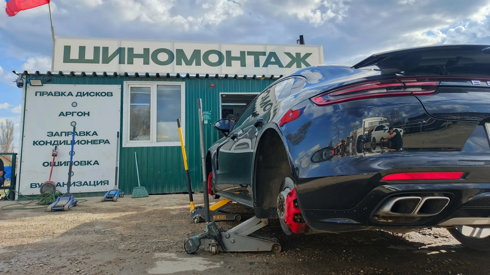
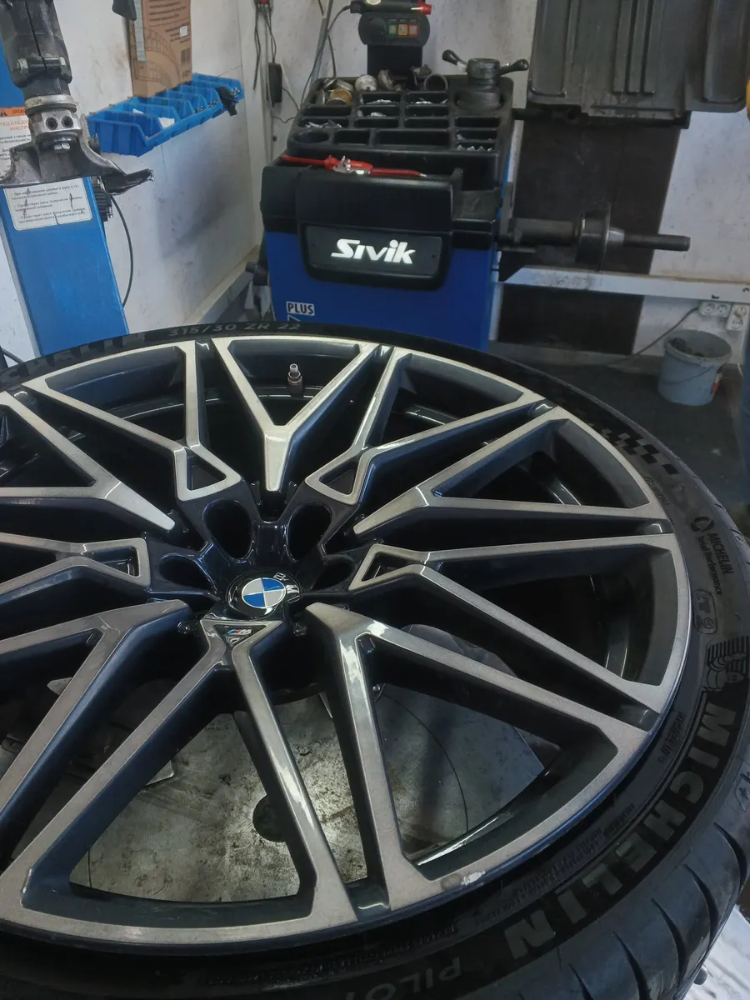
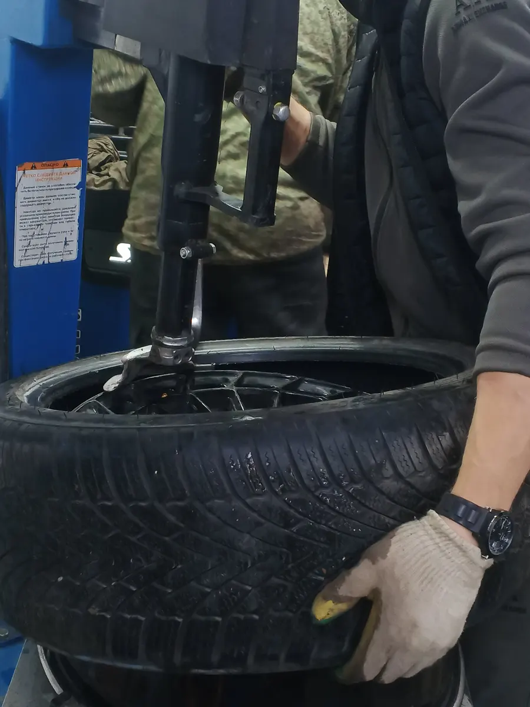
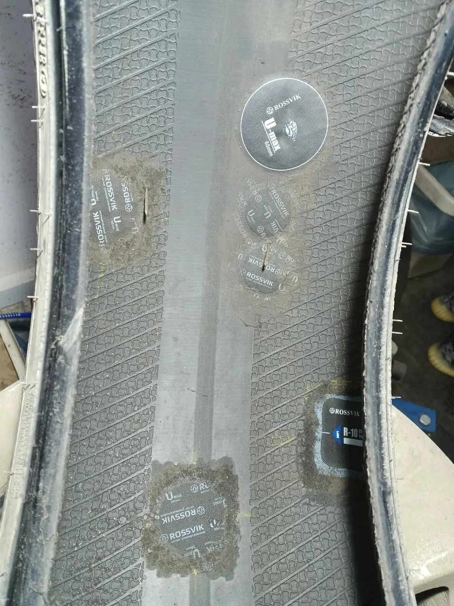

Зелёный шиномонтаж, Симбирская, 154
Шиномонтаж в Саратове: колёса, диски и кондиционер
Записывайтесь онлайн. Балансировка, правка и аргоновая сварка дисков, заправка кондиционера, выезд на дорогу.
- Затягиваем динамометрическим ключом
- Бортуем по заводским меткам
- Выездной шиномонтаж – 2000 ₽

Что входит в комплексный шиномонтаж
Входит
- Снять и поставить колёса
- Демонтаж и монтаж шины на диск
- Балансировка колёс
Отдельно, если нужно
- Мойка колёс – 50 ₽ за колесо
- Замена вентилей – 100 ₽
- Чистка диска от старого скотча – 100 ₽
Цены
Прайс с вашей карточки на Яндекс Картах. Цену на ваш радиус назовём при записи.
Шиномонтаж
- Комплексный шиномонтажснять и поставить колёса, перебортировать, отбалансировать; цена за R13от 1 760 ₽ за 4 колеса
- Ремонт проколалатки, грибки, жгутыот 200 ₽
- Ремонт боковых пробоевхолодная и горячая вулканизацияот 250 ₽
- Мойка колёс50 ₽ за колесо
- Замена вентилястандартные, алюминиевые, под датчики100 ₽
- Ошиповка ремонтными шипами20 ₽ за шип
- Датчики давленияустанавливаем и программируем2 500 ₽
Диски
- Правка дисковцена зависит от кривизныот 500 ₽
- Аргоновая сваркацена зависит от объёма работот 500 ₽
- Покраска дисковэконом от 300 ₽ за диск, порошковая от 12000 ₽ за комплектот 300 ₽
- Чистка диска от скотчабез вреда покрытию100 ₽
- Диски б/у и новыеот 1 000 ₽
Кондиционер, выезд, хранение
- Заправка автокондиционера1 500 ₽
- Проверка герметичности кондиционера1 000 ₽
- Мойка радиаторов300 ₽
- Выездной шиномонтажзапаска, прикурить, подвоз топлива, эвакуатор2 000 ₽
- Хранение колёс за сезонR13–R16 – 2000 ₽, R17–R20 – 3000 ₽, внедорожники – 4000 ₽от 2 000 ₽
- Шины б/у и новыеот 500 ₽
Цены с карточки на Яндекс Картах. Оплата наличными и картой.
Как проходит
- 01
Выбрали услугу, день и время
Заявка уходит в WhatsApp.
- 02
Приехали на Симбирскую, 154
Тел. +7 (8452) 44-87-55, если нужно уточнить дорогу.
- 03
Моем колёса и делаем работу
Бортуем по заводским меткам, затягиваем динамометрическим ключом.
- 04
Забираете машину
Снятый комплект можно оставить на сезонное хранение.



За что нас выбирают
Динамометрический ключ
Колёса затягиваем по моменту.
Бортуем по заводским меткам
И моем колёса перед балансировкой.
Диски – правка, аргон, покраска
Литые диски правим, трещины завариваем аргоном.
Выручим на дороге
Выезд – 2000 ₽: поставим запаску, прикурим, подвезём топливо.
Отзывы с Яндекс.Карт
«Место, куда хочется возвращаться! Все быстро, профессионально. Мастера вежливые. Отношение человеческое, какое сейчас редко встретишь. Обслуживалась уже 3 раза. Колесо делали и кондиционер. Всегда на высшем уровне. Местечко небольшое, но чисто, приятно. Рекомендую от души. 🔥🔥🔥»
Людмила · 21 июля 2025
«Отличная Шинка. Одна из первых где увидел что сотрудники затягивают колеса динамометрическим ключом. Диски литые правил у них, сделали отлично. Объективно подсказывают по качеству резины(купил в магазине кривые, естественно поменял после приезда на шинку). В общем ребята знают своё дело на отлично. Рекомендую.»
Олег Ж. · 10 января 2025
«Ребята очень выручили, красавцы. Приехал из Москвы и в городе словил боковой порез… срочно нужно было уезжать обратно, позвонил и через 10 минут уже нашли подходящий баллон, проверили, поставили и помчал обратно) все оперативно и дешёво, огромное спасибо, советую!!!»
Руслан О. · 4 июля 2025
Отзывы с карточки на Яндекс.Картах, без правок.
Частые вопросы
Сколько стоит переобувка?
Комплексный шиномонтаж на R13 – 1760 ₽ за четыре колеса: снять, перебортировать, отбалансировать и поставить. На ваш радиус назовём цену при записи.
Заправляете кондиционер?
Да: заправка – 1500 ₽, проверка герметичности – 1000 ₽, мойка радиаторов – 300 ₽.
Приезжаете на место?
Да, выездной шиномонтаж – 2000 ₽: поставим запаску, прикурим, подвезём топливо, вызовем эвакуатор.
Храните колёса?
Да, за сезон: R13–R16 – 2000 ₽, R17–R20 – 3000 ₽, внедорожники – 4000 ₽.
Как записаться?
Выберите услугу, день и время в онлайн-записи – заявка уйдёт в WhatsApp. Или позвоните: +7 (8452) 44-87-55.
Запишитесь к своему времени
- Адрес
- Симбирская ул., 154литЗ/1, Саратов
- Часы
- Каждый день 08:00–20:00
- Телефон
- +7 (8452) 44-87-55